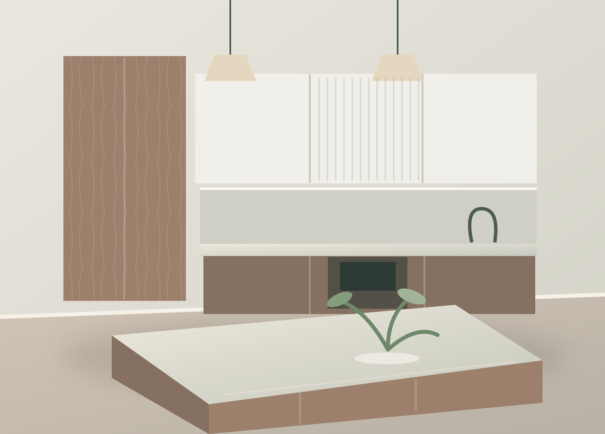

Расскажите о пространстве
Выберите планировку и примерные габариты.
Кухни и шкафы по индивидуальным размерам. От первой идеи и подбора фасадов до проекта, который впишется в ваш дом.

АВТОРСКИЙ ИНТЕРЬЕРНЫЙ ЭСКИЗ · НЕ ФОТОРешения начинаются с потребностей: где хранить посуду, как разместить технику и какие поверхности выбрать для ежедневного использования.
Гладкие фасады под потолком, рифлёный ряд ниже и тёплые коричневые нижние модули — архитектурный ритм, который делает интерьер выразительным без лишнего декора.
 ЭСКИЗ ПО ОПИСАНИЮ ПУБЛИКАЦИИ 18.11.2026
ЭСКИЗ ПО ОПИСАНИЮ ПУБЛИКАЦИИ 18.11.2026Сюжеты кухонь основаны на публикациях VK за ноябрь 2026 года; изображения — оригинальные демонстрационные эскизы, не реальные фотографии заказов.
Матовые фасады, древесные текстуры, вертикальные рельефы и стеклянные витрины. Посмотрите, как детали меняют впечатление от кухни.
Посмотреть материалыНе нужно сразу разбираться во всей фурнитуре. Достаточно примерной планировки и пожеланий, чтобы начать предметный разговор.
Выберите планировку и примерные габариты.
Примерьте цвета, фактуры и опции.
Покажите помещение и существующую планировку.
Отправьте параметры напрямую в VK мастерской.
Покажите размеры и желаемую палитру — соберём текст заявки для специалиста.